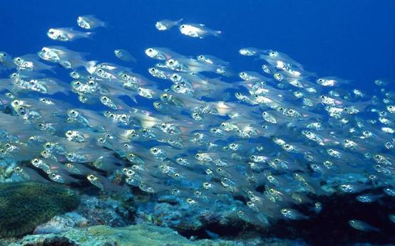
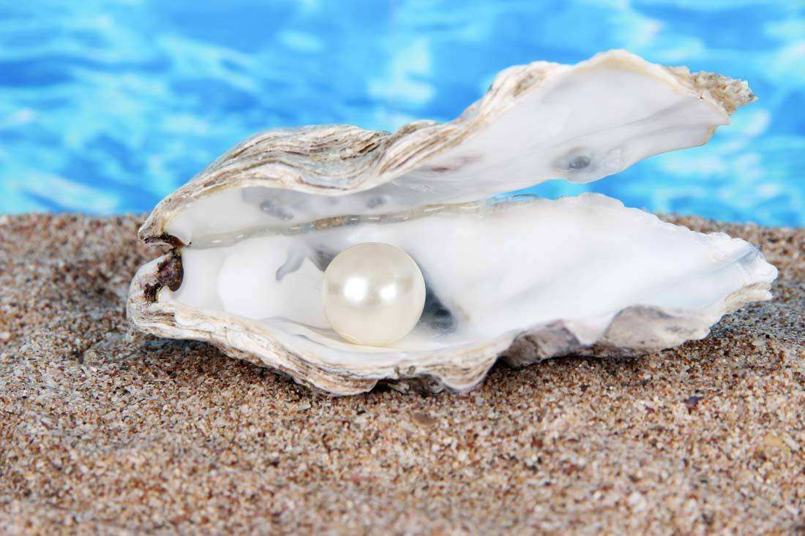
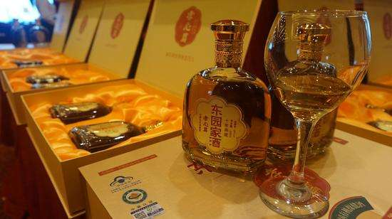
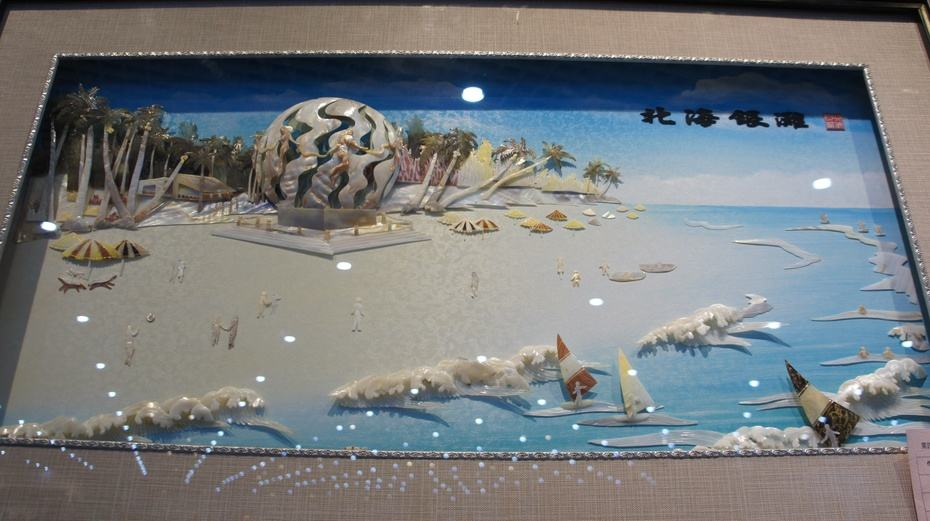

北海市面复临的北部湾有丰富的海洋资源。为中国“四大渔场”之一。主要海特产有海马、珍珠、海参、带子、鲍鱼、鱼翅、沙虫、石制斑、青蟹、石鲛、鱿鱼、墨鱼、大蚝、zhidao对虾等及各种贝类.中国西南地区最大的水产批发市场——北海水产市场.
北海产的珍珠称南珠，素以凝重结实、硕大圆润、晶莹夺目、光泽持久而驰名中外，自古享有"东珠不如西珠，西珠不如南珠"的盛誉。南珠是北海最有地域性、最有代表性的旅游产品。
东园家酒源于广西省北海市合浦县东园饭店黄氏祖传秘方，有一百多年历史，对因免疫力低下引起的肾阳不足，尿频，易感冒；因疲劳引发的风湿关节炎、腰酸腿痛，手脚麻木；因血色素低下血液携氧量不足引致的易气喘，皮肤无名青紫等有特效。
北海贝雕画是以贝壳、海螺为原料，经雕磨、堆贴而成的工艺美术品。产地：中国广西北海。北海贝雕画是广西传统的民族工艺品，有悠久的历史，是中国文化宝库中的瑰宝，承载着古老文化又体现现代文明，是认识北海、宣传北海的重要载体，是北海的城市“名片”。
